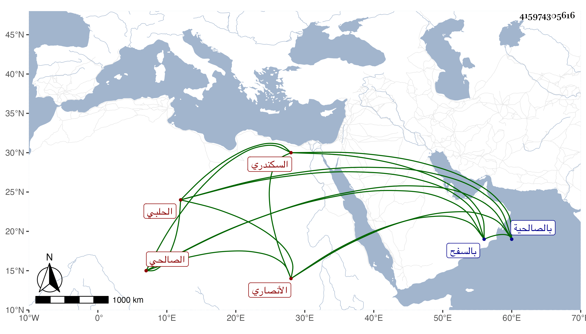

0902Sakhawi.DawLamic.ITO20230111-ara1.EIS1600.415974305616
Biography ID: 415974305616
481
أحمد بن محمد بن محمد بن أحمد بن أبي غانم الشهاب الأنصاري الحلبي الأصل الصالحي السكندري بن أبي بكر بن محمد بن أحمد المذكور في المائة قبلها ويعرف بابن الحبال وبابن الصائغ . سمع من الشهاب أحمد بن عبد الرحمن المرداوي مجالس المخلدي الثلاثة ومن عبد الله بن القيم والشمس عبد الرحمن بن محمد بن العز ابن أبي عمر والشهاب أحمد بن محمد بن علس وحسن بن علي بن مسلم اللبان وحدث سمع منه الفضلاء كابن موسى ووصفه بالشيخ الفاضل الجليل المسند وشيخنا الأبي عدة أجزاء وأجاز لشيخنا وذكره في معجمه والمقريزي في عقوده . ومات يوم الجمعة سابع عشري رجب سنة خمس وعشرين بالصالحية ودفن من الغد بالسفح .
